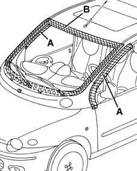

7035AA Location of windscreen wind noise
- Path
- Test > 70 FITTINGS > 7035 BODYSHELL WINDOWS > 7035A windscreen > 7035AA Location of windscreen wind noise
- Kind
- test / check procedure
- Applies to
- all engines; all production periods
- Interactive page
- https://sloeber94.github.io/elrnDB-fMltpl/en/#/2892415
Applies to: all engines; all production periods
Tape the various areas shown with masking tape.

Conduct a road test, bringing the vehicle up to the speed where the noise starts: if the rustling noise persists, check that you have taped the windscreen correctly and also ascertain whether the noise is coming from the sunroof area.
Remove the masking tape from area A and repeat the road test: if the rustling noise persists, locate the noise in the area of the front doors (7005 PASSENGER COMPARTMENT FRONT SIDE DOORS).
Remove the masking tape from area B (window only). Check the condition of the window trim moulding (no wrinkles or pinched parts).
If necessary replace the trim moulding, removing the window ( 7035A14 OUTER WINDSCREEN MOULDING - R R).